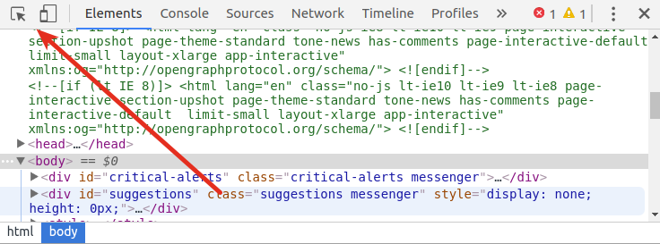
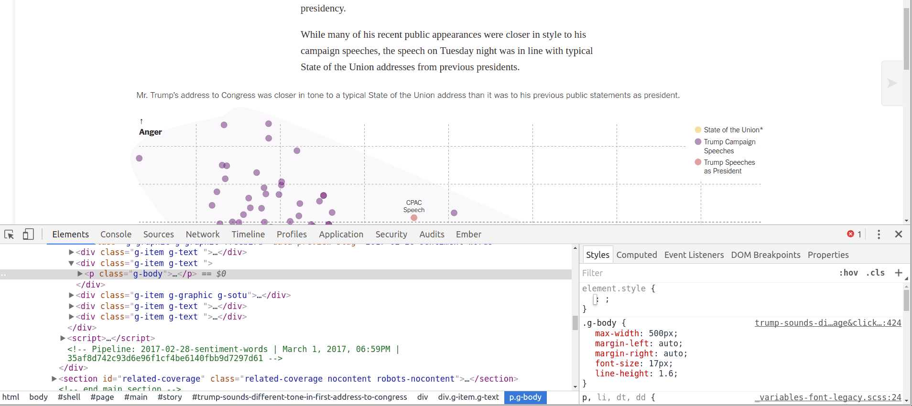

In-class Exercise: CSS
Resources
- This HTML Dog page lists the more common CSS properties you'll be using.
- This CSS cheat sheet is a bit more terse but you might find it useful.
- There are more exhaustive references on CSS-Tricks and the Mozilla Developer Network.
Part 1: Look at CSS
- With a partner, open this Glitch project.
- Open the
style.cssfile (on the left of Glitch). You do not need to edit it. - Look at the CSS. Try to find some parts of it that are familiar or that you can make guesses about. Use the Show feature on the project to see how it appears and look at the HTML to see which elements are being styled and how.
Part 2: Add CSS to a site
- Log in to Glitch.
- Open this Glitch project and "remix" it in your account by clicking on the project name, then Remix Project.
- Open your
style.cssfile (on the left of Glitch). This is the same HTML from the previous part, but there is not any CSS currently. - Change the background color of the
body. Add this to the bottom of the CSS file:
Confirm that this worked, then pick a different color. Refer to this page for possible color values.body { background-color: beige; } - Change the font family for the entire page by modifying the
font-familyfor thebody. For now let's set it to the genericsans-serif. Read more about this and see an example at CSS-Tricks. - Let's add some other styles. Still in the
style.cssfile, add a line after the code from the previous step and paste the following:
There should now be much more room between paragraphs. We selected the paragraph elements (p { margin-top: 100px; }p) and set themargin-topproperty to100px. This is probably too much margin—pick a smaller value that you think looks good. - Style all the links (
aelements) by adding a CSS statement after the statement we just added and setting properties as you like. I recommendcolor,background-color, andtext-decorationfor starters.
Part 3: Add CSS using classes
- Open this Glitch project and "remix" it in your account by clicking on the project name, then Remix Project.
- Open the site using the Show live button. Notice that we have a legend, but the circles for the legend are all the same color.
- Open the project's HTML file in Glitch.
- Find the HTML that creates the legend and note how the circles' classes are created.
- Open the project's CSS file in Glitch.
- Find the CSS that is styling the legend's circles.
- Add styles that change the background color for each circle in the legend. The colors should be:
- Entire home/apartment: #88CCEE
- Private room: #CC6677
- Shared room: #18ad31
Part 4: Use developer tools to change other webpages' CSS
- Load a webpage in your browser.
- Open developer tools.
-
Using the Select Element tool, select an element:
-
On the left you should see the HTML for the element, and on the right you should see the CSS for it. The CSS might be more complicated depending on the page you're looking at.

-
Style the element by clicking to the right of
element.stylein the CSS area. Start typing a property, use the arrow keys to select it, then press tab and type a value. This has an identical effect to adding CSS to astyleattribute in an element. - Use the Select Element tool to find another element you would like to style. This time, instead of styling by adding properties to
element.styleadd and change properties within one of the existing CSS statements that work on the element. When you do, multiple elements on the page should change. - Continue defacing the page and get a feeling for how the CSS on the page works. In particular, look at turning properties off (using the checkboxes to the left of them) and changing colors using the built-in color picker.
Part 5: Add CSS to a Carto map
- Open a Carto map in your Carto account.
- Open the legend for the map, creating a new legend if there isn't one yet.
- Edit the code for the legend by flipping the HTML switch.
-
You can style legends and pop-ups by adding a
styleattribute to the element you want to style (inline). If the original legend contained:<li class="Legend-categoryListItem u-flex u-alignCenter"> <span class="Legend-categoryCircle" style="opacity:1; background: #5F4690;"></span> <p class="Legend-categoryTitle CDB-Text CDB-Size-small u-upperCase u-ellipsis" title="Adult">Adult</p> </li>then you can change the bullet's style by editing the
styleattribute:<li class="Legend-categoryListItem u-flex u-alignCenter"> <span class="Legend-categoryCircle" style="opacity:1; background: #5F4690; width: 20px;"></span> <p class="Legend-categoryTitle CDB-Text CDB-Size-small u-upperCase u-ellipsis" title="Adult">Adult</p> </li> - Unfortunately, you cannot use selectors in Carto to style multiple elements at once. If you want full control over the style of legends and pop-ups, you'll have to use JavaScript as we will next week.
- Experiment a bit more with styling both legends and pop-ups in Carto. You can use developer tools while you do this if you find it useful.